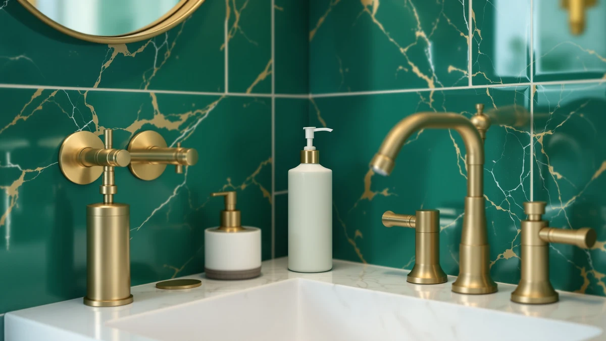

Best How to Clean Soap Dispenser Pump (2026) | Best Soap Dispensers
Prices and picks verified as of September 2026. Independent, reader-supported reviews.


Things to Know Before You Buy
- A sputtering or dead pump almost always means dried soap has clogged the tube or nozzle, not that the pump is broken.
- You can fix most clogs with white vinegar, warm water, and a paperclip. The whole job costs about $3 and takes 30 minutes.
- Thick, moisturizing, and foaming soaps clog pumps fastest because they leave a sticky film as they dry.
- A quick warm-water flush at every refill prevents most clogs, so you rarely need the full soak.
- Rinse out all the vinegar before you reassemble, or your next few pumps will smell sharp.
Learning how to clean soap dispenser pump parts saves you from tossing a dispenser that works fine underneath a layer of dried gunk. When your pump wheezes, spits half a dose, or stops moving entirely, the cause is almost never a mechanical failure. Dried soap has hardened inside the narrow tube and the tiny nozzle, and that plug blocks the spring from drawing liquid up.
You can clear it with things already in your kitchen: white vinegar, warm water, and a straightened paperclip. The full job takes about 30 minutes, most of which is hands-off soaking time, and it costs a few dollars at most. Below, we walk through the five steps that get a stubborn pump moving again, plus the mistakes that send people out to buy a replacement they never needed.
What You'll Need
- Supplies: White vinegar, warm water, a drop of dish soap
- Tools: A straightened paperclip or sewing needle, a small bowl or cup
Step 1: Empty the dispenser and remove the pump
Start by pouring whatever soap is left in the bottle into a spare container so you can reuse it later. Working with an empty bottle keeps the mess down and lets you see clearly into the pump tube. Set the bottle aside and focus on the pump itself, which is the part doing all the work and holding the clog.
Most pumps unscrew from the bottle with a quarter turn counterclockwise. If yours is a wall-mounted unit like the ESSGUO or HGFYZXD models, slide the reservoir out of its bracket first, then twist off the pump head. Do this over the sink, since a little trapped soap usually drips out as you loosen it.
Getting the pump completely free from the bottle matters for the next steps. You need to run water through it and soak it, and you cannot do either while it sits attached to a full bottle. Once you learn how to clean soap dispenser pump parts separately, the rest of the job goes fast.
Step 2: Flush the pump with warm water
Hold the pump head under warm running water and pump the plunger fast, 20 or 30 times. Warm water softens the dried soap inside the dip tube, and each press pulls water in and pushes the loosened residue out through the nozzle. You will often see cloudy water and small chunks come out on the first several pumps.
Keep the water warm, not hot. Hot tap water helps dissolve soap quickly, but boiling water can warp the thin plastic collar on cheaper pumps. If the plunger feels stiff or barely moves, that resistance confirms a clog sits deeper in the tube, and you will clear it in the soak coming up.
When the water running out of the nozzle turns clear and the plunger springs back on its own, the warm-water stage is done. If the pump still refuses to draw water, do not force it harder. Move to the vinegar soak, which handles the hardened deposits that plain water cannot.
Step 3: Soak the pump in a vinegar solution
Fill a small bowl or cup with a 50/50 mix of white vinegar and warm water, enough to submerge the pump head and most of the dip tube. The mild acid in vinegar breaks down the crusted soap and any mineral scale that hard water leaves behind, and it does the work while you wait rather than while you scrub.
Drop the pump in and let it soak for 15 minutes. Halfway through, pump the plunger a few times while it sits in the solution so the vinegar cycles through the internal tube and reaches the clog from the inside. The soak is the heart of the job. It dissolves the deposits plain water leaves behind, and the wait is what makes it work.
For a heavy clog, you can extend the soak to 30 minutes with no harm to the plastic. Add a single drop of dish soap to the bowl if the pump handled greasy or oil-based soap, since that cuts the residue faster. Vinegar has a strong smell, but it rinses away completely in the final step.
Step 4: Clear the nozzle and tube
Take the pump out of the vinegar and straighten a paperclip or grab a thin sewing needle. Slide it into the nozzle opening at the top of the pump and gently work it back and forth. The nozzle hole is the narrowest point in the whole pump, so it clogs first and stays blocked even after a soak. A few passes with the wire pushes the last plug loose.
Next, feed the paperclip down into the dip tube from the bottom end. Twist it as you push so it scrapes the tube walls rather than just poking a channel through the center. You want to knock the softened soap off the sides, not tunnel through it. Run warm water through the pump again after you do this to flush out everything you dislodged.
This mechanical step is where the cleaning finally pays off: the soak loosens the deposits and the wire removes them. Be gentle with the nozzle, though. Forcing a thick tool into a small opening can crack the plastic or bend the internal spring, and a bent spring turns a fixable pump into a real replacement.
Step 5: Reassemble and prime the pump
Rinse the pump thoroughly under warm water, pumping the plunger a dozen times to push clean water all the way through. This step clears out every trace of vinegar so your soap does not pick up a sour smell. Keep rinsing until the water running out has no vinegar scent at all.
Refill the bottle, screw the clean pump back on, and prime it. Priming means pressing the plunger several times in a row to draw soap up the tube for the first time. The first two or three pumps may come out as air or a thin dribble, which is normal. By the fourth or fifth press, you should get a full, smooth dose.
Wipe down the outside of the pump and bottle before you set it back by the sink. If the pump still stutters after priming, the clog was worse than a single soak could handle, and repeating steps three and four usually solves it. Once you have cleaned the pump this way once, a quick flush at each refill keeps it from clogging again.
Common Mistakes to Avoid
The biggest mistake is throwing the dispenser away at the first sputter. A clogged pump looks broken, but nine times out of ten it just needs the soak and flush above. Learning how to clean soap dispenser pump clogs saves you the cost of a replacement you did not need.
People also reach for pins that are too thick. A safety pin or a toothpick can jam in the nozzle or bend the internal spring, and once that spring bends, the pump really is done. Stick to a thin paperclip or a sewing needle, and work it gently rather than jabbing.
Skipping the rinse is another common slip. Vinegar clears the clog, but if you leave it in the tube and refill right away, your first several pumps of soap smell sharp and sour. Flush with plain warm water until the vinegar scent is gone before you reassemble.
Finally, do not use boiling water on cheap plastic pumps. Warm is enough to soften soap, while boiling water can warp the collar and threads so the pump no longer seats tightly on the bottle. And once a pump is clean, resist the urge to leave it dry for days, because the last film of soap hardens fast. A quick flush at each refill keeps the whole thing moving.
Our Top Picks
If your current pump is beyond saving, or you simply want one that resists clogging in the first place, these three dispensers are easy to take apart and rinse. We picked one for most bathrooms, one for a tight budget, and one refillable wall unit that keeps the counter clear.

Editor's Pick
Shampoo and Conditioner Dispenser Shower
The pumps unscrew in seconds, so a monthly flush is quick, and the wall mount keeps the shower ledge free. A good default if you want a dispenser that stays clog-free without much fuss.
$19.99
Check Price on Amazon
Best Value
Wall Mounted Hand Soap Dispenser
Under $10 with a simple pump you can rinse in a minute, this wall-mounted unit is the one to grab if you just want a cheap, reliable dispenser for a busy sink.
$8.99
Check Price on Amazon
Premium Choice
White Manual Bathroom Wall Mounted
The wide reservoir mouth lets you reach in and scrub during a deep clean, and the manual pump comes apart cleanly. Pick this if you want the easiest unit to maintain long term.
$9.98
Check Price on AmazonFrequently Asked Questions
How do you unclog a soap dispenser pump?
Detach the pump, run warm water through it while working the plunger, then soak the head in a 50/50 white vinegar and water solution for 15 minutes to dissolve the dried soap. Clear the nozzle with a straightened paperclip and flush again before you reassemble. That sequence handles almost every clog without any special tools.
How often should you clean a soap dispenser pump?
Give the pump a quick warm-water flush every time you refill it, and do a full vinegar soak every month or two. Dispensers holding thick or moisturizing soaps clog faster, so clean those every three or four weeks to stay ahead of the buildup.
Can you use vinegar to clean a soap dispenser pump?
Yes, and white vinegar is the ideal choice. Its mild acidity dissolves both hardened soap and the mineral scale that hard water leaves behind. Mix it 50/50 with warm water, soak the pump for 15 minutes, then rinse thoroughly so no vinegar smell carries into your next batch of soap.
Why does my soap dispenser pump keep clogging?
Thick, foaming, and moisturizing soaps leave a sticky film that dries inside the narrow tube between uses, and hard water adds mineral scale on top of it. Diluting a heavy soap with a little water and flushing the pump at each refill both cut down on how often it clogs.
Can you fix a soap pump that won't come back up?
A plunger that stays down usually means the internal spring is stuck with dried soap or has bent. Try the vinegar soak first, since a stuck spring often frees up once the soap dissolves. If the spring is physically bent from forcing a thick tool into it, the pump is not worth saving and a cheap replacement is the better move.
Verdict
Knowing how to clean soap dispenser pump clogs turns a dispenser you were about to toss into one that works like new in half an hour. Empty the bottle, flush the pump with warm water, soak the head in a 50/50 vinegar solution, clear the nozzle and tube with a paperclip, then rinse and prime. The supplies cost about $3, and the only real skill is patience during the soak. Skip the boiling water and the thick pins, and rinse out all the vinegar before you refill.
If your pump is genuinely past saving, the Cabo Deseado shower dispenser is our top pick because its pumps unscrew for cleaning in seconds, which keeps future clogs from ever setting in. Pair a clog-resistant unit like that with a quick flush at every refill, and you will rarely reach for the vinegar again. A little upkeep beats buying a new dispenser every few months.